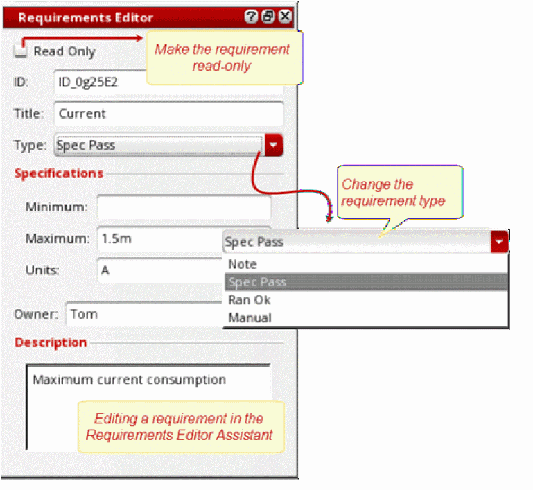
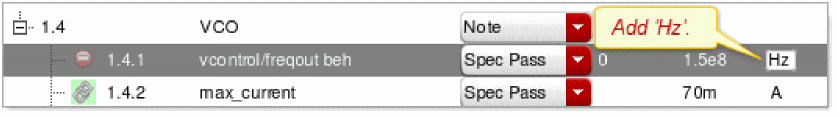

2
Performing Basic Verification Flow Tasks
This chapter demonstrates how Virtuoso ADE Verifier (Verifier) is used to perform a basic design verification flow. This basic verification flow, in the top-down verification sequence, is demonstrated using the existing data in the
This chapter includes the following topics:
- Defining Verification Requirements
- Working with Implementations
- Simulating Implementation Cellviews
- Accessing Design Verification Status
- Generating and Using Batch Scripts
- You can use Verifier in different verification flows, and not just the top-down flow demonstrated in this chapter.
- This chapter showcases selected features of Verifier that are typically used to perform basic design verification. For details about other features, see Chapter 3, “Using Advanced Verifier Features.”
Defining Verification Requirements
This section details the following tasks.
- Task 1: Open a Verifier Cellview
- Task 2: Review the Requirement Hierarchy
- Task 3: Edit a Requirement
- Task 4: Add and Move a Requirement
-
Task 5: Delete a Requirement
Task 1: Open a Verifier Cellview Open
amsPLL/TOP_verification/verificationin Verifier. This cellview contains the design verification plan of the sample design.
- Choose Tools — Library Manager from Virtuoso CIW to launch Virtuoso Library Manager.
-
Double-click the cellview of the type
verifier.
For this task, selectamsPLL/TOP_verification/verification. Double-clickverification. Virtuoso launches Verifier and displays the data stored in this view. Setup is the default tab of Verifier.
Task 2: Review the Requirement Hierarchy Review the hierarchical requirements tree for the design verification project.
To review the hierarchical requirements tree
-
Notice that the Setup tab screen displays the hierarchy of design verification requirements on the left panel.
The following figure illustrates how Verifier represents the verification requirements of the sample design.
In addition to the unique auto-generated hierarchical number, unique ID, title, description, owner, and specifications, a requirement indicates the mapping status and its verification type. The following table describes the status indicators and type.
|
|
|
|
|---|---|---|
|
The requirement |
||
|
The requirement needs to be mapped, but is not mapped with any implementations. |
||
|
The specification checks failed, which indicate the following:
This status is the same as the implementation status Spec Check Fail. |
||
|
The requirement is referenced from an existing Verifier cellview. |
||
|
The requirement that is referenced from an existing Verifier cellview, is out-of-date. |
||
|
Verification type of the requirement. The type can be one of the following:
|
||
The requirements area includes the requirement table with details, buttons, and popup menu options to perform various operations, such as adding requirements, reorganizing the hierarchy, setting requirement owners, among other options.
|
|
- Click the Setup tab.
-
Edit the requirement in the hierarchy tree directly or in the editor.
-
You can edit the details in the requirements tree directly, with the exception of Description. Click a text field of the highlighted record and change its value. To change the goal, select the goal from the drop-down list.
-
To change the description and other details in an editor, do one of the following:
- Double-click the description field.
- Click the Open Requirements Editor icon on the toolbar.
- Choose Edit — Open Requirements Editor.
This opens the Requirements Editor in the right pane where you can change the details.
-
You can edit the details in the requirements tree directly, with the exception of Description. Click a text field of the highlighted record and change its value. To change the goal, select the goal from the drop-down list.
- You cannot edit the auto-generated hierarchical number under Hier.
- The editor displays in the Setup and Results tabs. It is not required in the Run tab.
-
You can make a requirement read-only using one of the following methods:
- Select the requirement, open the Requirements Editor, and enable Read Only.
- Select the requirements, right-click, and select Set Selected Requirements Read Only.
- Click Show and select Read Only. Select the Read Only check box in the requirements tree.
Read-only requirements are distinguished in the requirements hierarchy by gray italic text and highlight. See requirement1.1.1.1in the sample database. -
If the custom fields feature is enabled, the editor displays the custom fields for the selected requirement.If you want to retain the mapping information when renaming the requirement IDs that are mapped to their implementations, choose Edit — Preferences, and select the general option Copy mapping to renamed requirement. Save the changes.

|
Add a requirement with the title |
To add the new requirement between ID2 and ID3
-
Do one of the following in the requirements tree of the Setup tab screen:
A new requirement appears under1.2calledID5. Note the auto-generated hierarchical number of the new requirement.
-
Select and click the new requirement. Rename the title to
myReq.
-
Do one of the following to move the new requirement at the same level as
1.2and1.3. Currently, the new requirement is placed as a child requirement of1.2.- Select the new requirement and click the Decrease Indent button.
-
Select the new requirement and press
Ctrl+Left. -
Drag the new requirement and place it as required.
Task 5: Delete a Requirement Delete the requirement you added with the title
myReqafter exploring the options available to the requirement. Then save the cellview.
To delete a requirement in the Setup tab screen
-
Right-click the requirement (
myReqfor the task) and choose Delete Requirements. - Click Yes, when prompted, to confirm the deletion.
You can click File — Save to save the cellview.
The hierarchical numbers of the requirements change to indicate the new hierarchical order.
Working with Implementations
This section details the following tasks.
- Task 6: Review the Implementations List
- Task 7: Review the Requirement–Implementation Mappings
- Task 8: Add an Implementation Manually
- Task 9: Define Requirement–Implementation Mappings
- Task 10: Check and Implement Verifier Specifications
|
In the Open the cellview, if it is not already displayed, and explore the implementations. |
To explore the implementation data in the cellview
-
Click the Setup tab.
If the Requirement Editor is displayed, hide it by clicking Hide in the editor.
The right pane displays the implementations that you can map with the requirements. The left pane displays the requirements hierarchy.
The MappedHier column in the implementations pane displays the individual mapping percentages. The Overall Progress bar displays the overall mapping percentages.
The following figure illustrates the implementations of the sample design.
-
Review the implementations list. You can show or hide the columns. For details, see the related tip.
The implementation hierarchy contains the following details.
| Column | Description |
|---|---|
|
The hierarchy of the implementation cellview, in relation with its tests and outputs. |
|
|
The library, cell, and view of the implementation cellview. These columns are hidden by default. |
|
|
The option to select the cellview history. When you initiate the simulation of an implementation from Verifier, a session is loaded with the implementation cellview where the specified history is set as the active history within that session. By default, a new history is created outside the cellview as the implementation is run. |
|
|
The option to run the implementation from Verifier. Select this check box if you want to initiate the run from Verifier, or clear it to load the test results from the selected history when the implementation cellview is run from outside Verifier. |
|
|
The tests of the implementation cellview. This column is hidden by default. |
|
|
The name of the simulation output to be used for determining the verification result. Outputs are measurements and assertions that can be evaluated using the simulation results. If the run mode of the implementation cellview is Monte Carlo Sampling, the outputs include the output values and statistical values. |
|
|
The performance specification to determine if the related simulation result passed.
This column displays Spec Check Fail to indicate issues found in its specification checks. This is similar to the requirement status that indicates |
|
|
The mapping status of the implementation.
The requirements hierarchy indicates the mapping status through icons. The title of the requirements area and implementations area indicate the overall mapping percentage.
The following are the possible mapping status of implementations:
It is not necessary to achieve 100% mapping for all implementations or requirements. You can aim to achieve 100% mapping if you want to ensure that each test and each output in each implementation cellview is mapped to a requirement. The status of your verification project depends largely on the requirements and their mappings.
|
The implementation area provides buttons and popup menu options to perform various operations, such as adding or deleting implementations, overriding specifications, defining requirement–specification mappings, and opening implementation cellviews.
To review requirement–implementation mappings
- Select Show Cross Mapping at Cursor in the Edit — Preferences — General tab screen.
-
Place the cursor over the requirement or implementation to identify their mapping, as illustrated in the following figure.
For completing this task, place the cursor over1.1.1.2. It is mapped to this implementation:Two_Stage_OpAmp/maestro_nominal/Active.AC.Gain
When you click a requirement or implementation, the mapped entries are selected. You can identify other mappings by placing the cursor over other requirements or implementations.
|
Add |
To add an implementation cellview
-
Click Add Implementation in the implementations pane.
The Add Implementation form displays. -
Specify the library, cell, view and history to select the implementation cellview.
For the task, selectamsPLL/PLL_VCO_320MHZ_PD_tb/maestro. -
Click OK.
If the selected cellview has a singleActivehistory, it is used as the default history for the implementation. If it has multiple histories, the Implementation History Item form displays. Select the history that you want to use and click OK.
The implementation cellview appears as the last entry in the implementations list.
|
The new implementation cellview |
To map a requirement to an implementation
-
Select the requirement and the implementation in the Setup tab.
-
Click Map.
The ID of a requirement is used for the mapping definition. The hierarchical number is not used because it can change based on modifications in the verification plan.To remove requirement–implementation mappings, select the requirements or implementations, right-click, and choose Delete Mapping.
|
Choose to check and use the specifications set in the requirements by selecting General Options — Requirement specifications and check to implementation in the Virtuoso ADE Verifier Preferences form. Also, enable the option Check units to check if the units mentioned in the requirements and implementations match. For details, see the related
The specification check for the requirement |
To view the log and identify the reason of the specification check failure
- Choose View — Show Log.
-
Review the log entries to identify the issue.
The following example log entry illustrates how you can identify the issue for1.4.5. It indicates the reason for the failure of the specification check for the1.4.5–PD behaviourmapping.
Notes:- In the Virtuoso ADE Verifier Preferences form, if you disable the Check units option under the General Options tab, this specification check failure due to mismatching units will not occur.
-
Place the cursor over a requirement to see the details, including the reason of the specification check failure.
To investigate and correct the specification check failure
- Review the reason of the failure using the log.
-
Decide the approach you want to use to rectify the failure and use that approach.
For example, to resolve the issue of the1.4.1–freq_checkmapping, you can take one of the following actions:-
Change the requirement so that its specification matches with the specification of the corresponding
freq_checkoutput.
For this task, add the unitHzto the requirement.The icon changes. The Overall Progress also changes from 52 percent to 57 percent. -
Change the setup of output
amsPLL/PLL_VCO_320MHZ_tb/maestro/Active.amsPLL:PLL_VCO_320MHZ_tb:1.freq_checkso that it matches with the requirement specification.
Verifier checks for changes in implementation cellviews frequently and updates information available to the Verifier session accordingly. You can also choose Tools — Check for Changes in Implementations in Verifier.You can open an implementation cellview to change the output setup. For this, right-click the cellview and choose Edit Implementation Cellview. Make the changes and save the cellview.If the preference option Time Interval Between Implementation Change Checks is set to0in the Virtuoso ADE Verifier Preferences form, update the information available to Verifier manually.You can overwrite the specification set in an implementation with the specification set in its mapped requirement. Likewise, you can overwrite the specification set in a requirement with the specification set in its mapped implementation. For overwriting the specification, select the relevant implementations and right-click to display the popup menu. Then, select Overwrite Implementation Specification or Overwrite Verifier Specifications based on your overwrite requirement.
-
Change the requirement so that its specification matches with the specification of the corresponding
Simulating Implementation Cellviews
This section details the following tasks.
- Task 11: Ensure that Verifier Can Initiate Simulations
- Task 12: Organize Implementation Cellviews in Implementation Sets
- Task 13: Simulate Implementation Cellviews
- Task 14: Monitor Simulation Status
- Task 15: View Simulation Details
|
|
The cellview
For |
To ensure that you can start the simulations of implementation cellviews from Verifier
- Click the Setup tab to view the implementations.
-
Ensure that the Run check box is selected for all the implementation cellviews that you want to run from Verifier.
Two_Stage_Opamp/OpAmp/maestro_MC, clear the Run check box to inform Verifier that this cellview is to be simulated from an external application. After the simulation is completed outside Verifier, you can load the results stored in a cellview history. If required, you can select the history from the History options of the implementation. To reload the results, click the Reload Simulation Results button on the toolbar, or choose Tools — Reload Implementation Simulation Results. You can also load results from the Run tab.- Click the Run tab.
-
Right-click in the left pane and choose Create New Implementation Set... from the context menu.
The Implementation Set Name form displays. -
Type the name of the implementation set.
For this task, typemySet. - Click OK.
The implementation set is added. If some implementation cellview in the Implementations tree were selected, they get included in the new implementation set. If you had selected another implementation set, then the new set is added as a child set of the selected set.
To delete an implementation set
- Right-click the implementation set and choose Delete from Implementation Set... from the context menu.
-
When prompted, click Yes to confirm the deletion.
For this task, removemySet.
The implementation set and its implementation cellviews are removed. The implementation cellviews continue to be available under the Implementations tree.
- An implementation cellview can belong to multiple implementation sets.
- You can rearrange an implementation set or cellview in the Implementation Sets tree using the up or down arrow buttons. You cannot rearrange the cellviews under Implementations. However, when you rearrange the implementation cellviews from the Setup tab.
To add an implementation cellview to an implementation set
-
Right-click the cellview in the Implementations tree of the Run tab and choose Add to Implementation Set. The available implementation sets are displayed in the context menu.
For this task, right-clickamsPLL/PLL_VCO_320MHZ_PD_tb/maestroand then choose that option. -
Select the implementation set from the context menu.
For this task, select run_weekly. - Click OK.
The selected implementation cellview is organized in the implementation set.
To start simulating the implementation cellviews from Verifier
-
Click the Run tab.
You can start the simulation of multiple implementation cellviews from Verifier serially or in parallel. You can also load the simulation results stored in the history of an implementation cellview. You typically organize implementation cellviews in implementation sets and then choose to run all the implementation cellviews of an implementation set, as required.
The following image displays the Run tab.
-
Do one of the following:
-
Click the Run button corresponding to an implementation set to simulate all the cellviews organized in that set.
For this task, click Run corresponding to run_weekly. - Click the Run button corresponding to an individual cellview to simulate that cellview.
- Right-click an individual cellview and choose Run Simulation.
- Click the Run button on the toolbar to run all cellviews serially or in parallel. You can also set Verifier to run the cellviews incrementally in batch mode. Verifier displays text at the bottom to indicate how the cellviews will be run when you choose to use that option.
- From the Implementations list, select the cellviews you want to simulate and click the Run button on the toolbar to run the selected cellviews.
-
Click the Run button corresponding to an implementation set to simulate all the cellviews organized in that set.
You can stop the simulations started from Verifier. For this, click the Stop button. You can also right-click the cellview and choose Stop Simulation.
|
Tip: |
To view the requirements associated with an implementation cellview in the Run tab screen, select Details. |
|
Tip: |
If the simulations do not run properly, check the run preferences set in Verifier, such as the default job policy. |
|
|
In |
To monitor the simulation status
-
View the simulation run status of each cellview indicated by the corresponding status bar. The following table describes the possible status.
To view simulation details, do the following as required
- Select the implementation cellview in the Run tab of Verifier. The right panel displays the simulation run details, such as the run mode, tests, simulation corners, run history, and other details.
- View the simulation run status and details that Virtuoso CIW and the simulation application log.
- Right-click the implementation cellview, and select View Implementation Results. Then, view the simulation details in the main application of the implementation cellview in read-only mode.
To view the log that the simulator application maintains for a test run
- Right-click the implementation or its mapped requirement from any Verifier tab, choose View Simulation Log of Implementation Test, and select the test.
The simulation log of the test displays in a new window.
Accessing Design Verification Status
This section details the following tasks.
- Task 16: Determine the Current Overall Design Verification Status
- Task 17: Review the Verification Status of Each Requirement
- Task 18: Access Detailed Verification Reports
user-defined directory by default. You can choose to store the results in the current Verifier cellview instead. For this, choose Edit — Preferences, click the Run Options tab, and set your preferred option.To know the overall verification status
-
Do one of the following:
The overall current verification status displays, as illustrated in the following figure. Place the cursor over Overall Progress to view the status snapshot.
run_weekly was complete (Task 13), including amsPLL/PLL_VCP_320MHZ_PD_td/maestro/Active, the Overall Progress bar should change from 43 percent to 73 percent.Note the following from the overall status:
- The design verification is failing currently.
- Not all requirements are mapped, and a requirement is set for manual sign off.
- All simulations were run successfully, including the simulation whose results were loaded in Verifier.
-
The percentage of the verification requirements that have passed is displayed.The overall verification status depends on the requirements plan and mappings, along with the results of the runs. For example, the verification plan of the sample design does not include detailed requirements for the filter and power amp blocks yet because they are planned for the future. When you add the requirements for these blocks, you will notice their contribution to the overall verification status.
To review the verification status of requirements
-
Click the Results tab.
Verifier displays the requirements hierarchy with the verification status. -
Review the overall verification status of each requirement.
The following table lists the keywords and icons used to indicate the verification status of requirements.Icon Keyword Description The requirement is of the type Manual and it is not signed off.
The implementation mapped to the requirement has not been run and must be run to capture simulation results.
The specification checks failed. For details, see the corresponding
requirement icon .Verifier does not have the current simulation results of the implementations associated with the requirement.
The test is disabled in the implementation cellview and cannot be run.
-
Select a requirement to view its verification details in the Result tab or the Information Assistant.
Compare the specification with the corresponding simulation results to investigate any failure. You can open the results outside Verifier. For this, right-click the implementation and select View Implementation Results.
|
|
Investigate what you need to do to pass the requirement |
|
|
Change the specification of a requirement and review its effects on the verification results. |
To view the verification report:
-
Choose the following option from the View menu.
A verification report includes the following elements:
-
Report header
This information includes the report file name, location, creation time, and name of the creator. It also includes the overall verification status. -
Run information
This information includes the implementation cellviews and their simulation details. The report indicates the run information of an implementation cellview. -
Requirements-based verification details
This information includes the requirements, their verification status, and the implementation details with status. The following is an example of this information. It indicates the verification details of a parent requirement in the report in HTML format.
Generating and Using Batch Scripts
This section details the following tasks.
|
|
Create a batch script that you can later use to rerun the saved Verifier cellview from the command line. Review the generated script. |
To generate a batch script for the current cellview
-
Do one of the following
The Batch Script File Name form displays. -
Specify the location and filename of the batch script.
The default location is the current directory and the default filename is in the format currentCell_run. For example,TOP_verification_run. - Click Save.
To review the contents of the batch script
-
Open the generated batch script file in an editor and review the contents. The following box illustrates an example of a batch script.
|
|
Run the batch script you created in |
|
|
Before you run the batch script, set your preferences in Verifier. For example, you can choose to hide or display runtime status information. |
Verifier runs the batch script. You can monitor the status of the batch run in Verifier.
0 for pass status and 1 for fail status. For example, the following return value indicates that the run was successfully completed:Ctrl+Z and then kill the batch script process using the kill -9 PID command. Do not attempt to stop the batch script by pressing Ctrl+C because this action will leave Verifier and the simulations running. Return to top